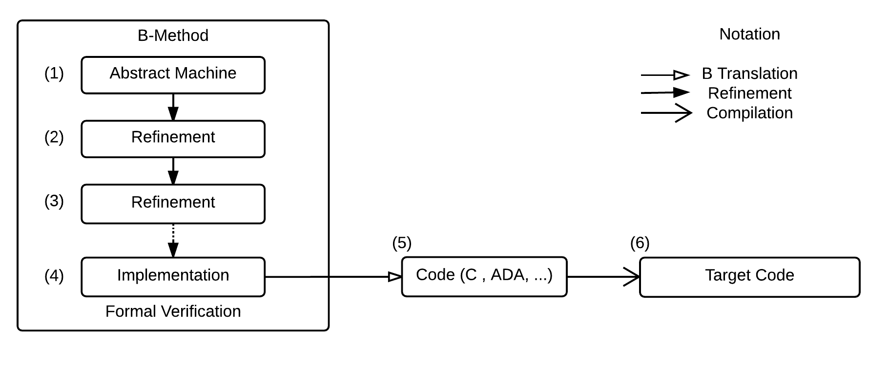
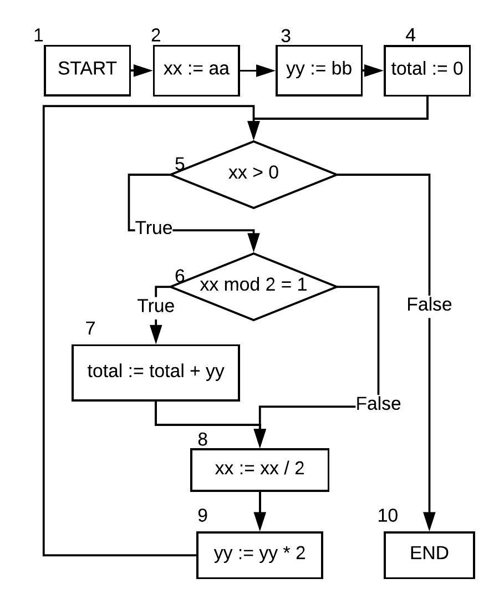

Outline
- Introduction
- Features of BTestBox
- Example
- Related work
- Conclusion and future work
Introduction (1/3)
- It is an open source tool developed to support the validation of code generated from B specifications up to executable code.
- Tests the translated code and assures dependability of the translation according to the coverage criterion.
- Statement Coverage (ST); Branch Coverage (BC); Path Coverage (PC); Clause Coverage (CC); Combinatorial Coverage (CoC). [AMMANN, 2003]
- Can be used as an extension for Atelier B (a popular IDE developed to model, refine, verify, and generate code for B Method).
Introduction - B Method (2/3)
Sorell M. :
- The B Method is a consolidated formal method that has been used for several years in critical systems.
- It is based on the abstract machine notation (AMN) and on the generalized substitution theory, which was grounded over Dijkstra’s notes [Dijkstra et al. 1976].
- The B Method supports modular modeling; each module specifies a software component in a different abstraction level. 
- B Method allows to obtain a proven implementation model.
- There is still a weak step in the development process: the production of the binary code from the B implementation.
Motivation (1/2) (General)

- Errors in compilers occur and may silently introduce bugs from correct source code [Leroy 2009].
- Even if the source code meets the functional requirements, which is demonstrably the case with the B method, the object code may not meet these requirements.
- Indeed, eleven C compilers are identified with more than 325 compilation errors [Yang et al. 2011].
- Compilers and translators used in small communities have higher inherent technological risks than tools used in large scale [Stuermer et al. 2007].
- B method has a relatively small community.
Motivation (2/2) (B Method)
- In the B community, these code generators demand additional safety criteria, mainly because they are used in critical applications.
- Testing techniques can be used as an instrument for an in-depth validation of the system.
- Also, some certification standards require the use of software testing techniques.
- There are limitations to formal methods, and software testing can complement a formal verification providing tools to identify failures, exploit possible defects introduced during development, or during the maintenance of the code [Matos 2016].
- This context motived the development of BTestBox.
Creating the test cases
- BTestBox generates a control flow graph and uses Hoare logic to generate a predicate characterizing the possible values for the execution paths, according to the chosen criterion.
- Then, the predicates are solved and the values of the input and output parameters are stored for each valid solution.
- Our tool prepares B components capable of executing and checking the execution of the test cases after the translation.
- Finally, the test components are translated and executed, and the metrics are reported.
BTestBox's architecture
- BTestBox can be used as an extension for Atelier B (a popular IDE developed to model, refine, verify, and generate code for B Method).
- The test cases are written in B so that the models are translated and executed in any target language.
- The tool receives a B implementation, the target translator, a compiler, a coverage criterion, the folder project, and the logic expression solver (ProB [12])

Example - Path Generation
RussMult
IMPLEMENTATION RussianMult_i
REFINES RussianMult
CONCRETE_VARIABLES xx,yy,total
INVARIANT xx ∈ N ∧ yy ∈ N ∧
total ∈ N
INITIALISATION
xx,yy,total := 0,0,0
OPERATIONS
RussMult(aa,bb) =
xx:=aa; yy:=bb; total:=0;
WHILE xx > 0 DO
IF xx mod 2 = 1 THEN
total := total + yy
END;
xx := xx / 2;
yy := yy * 2
INVARIANT xx ∈ N ∧
total+xx*yy = aa * bb
VARIANT xx
END
END
END

BTestbox generates the following paths:
- = 1, 2, 3, 4, 5, 6, 7, 8, 9, 5, 10;
- = 1, 2, 3, 4, 5, 6, 8, 9, 5, 10;
- = 1, 2, 3, 4, 5, 10.
Generating Predicates
We use the notation: \(\{P\} C \{Q\}\), where \(P\) represents the precondition for the execution of the command \(C\), and \(Q\) is the post-condition established after the command. \(P\) and \(Q\) are states described by first-order logic formula. The precondition may be computed from the command and post-condition. The predicates for each path generated by \textit{BTestBox} are used to create test cases.Path Generation
[TODO: explanation]
\(\exists(xx, yy, total).(xx > 0 \wedge xx\ mod\ 2 = 1 \wedge xx \in \mathbb{N} \wedge total + xx * yy = aa * bb) \)
\(\wedge \)
\(\exists(xx, yy, total).(xx \leq 0 \wedge xx \in \mathbb{N} \wedge total + xx * yy = aa * bb) \)
\(\wedge xx : \mathbb{N} \wedge yy : \mathbb{N} \wedge total : \mathbb{N} \wedge aa : \mathbb{N} \wedge bb : \mathbb{N} \)
Creating test case files
- Its improvements will provide interesting information and metrics about the code.
- Compatibility to any B Translators (The generated tests are represented on B Language)✔

[TODO: Colocar o relatório do HTML gerado]
Experiments
[TODO: How it was improved?] [TODO: Put the table of results]Related work
- In [Marinescu et al. 2015], the authors presented an overview of the current state of the art for model-based testing tools that use requirement-based specification languages.
- BZ-TT generates test cases from B and Z models.
- It relies on constraint solving, and its goal is to test every operation.
- It is a private tool and a public version is not available.
- ProTest is an automatic test environment for B specifications.
- It uses model-checking techniques to find test sequences that satisfy its test generation parameters.
- The user has to define the requirements to be satisfied by the test cases. These requirements are operations that must be covered and predicates that must hold true.
- The tool only generates abstract test cases.
- Our tools generate concrete tests.
Related work
-
Tools developed in our research group:
BETA relies on input space partitioning and logical coverage criteria to generate unit tests from abstract B machines.
The tool automates all steps of the test generation process.
BTestBox
It is completely automatic in all steps of the test generation process based directly on implementation modules which are a closer representation of the actual software.
Another difference, it that BETA is focused on unit testing.
BTestBox tests is focused on the entire module and its functions.
Extras
Export to PDFExport to PDF with notes